Also see the Independent Travel Guide to Uzbekistan and Kyrgyzstan
Fotoðraf Galerisi / Photo Gallery
Fotoðraflarý
daha büyük görmek icin üzerine tiklayýnýz /
Click on a photo to view a
larger version
Biþkek
& Civarý / Bishkek & Surroundings
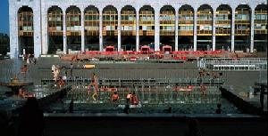
Alatoo (Aladað) Meydaný / Alatoo Square
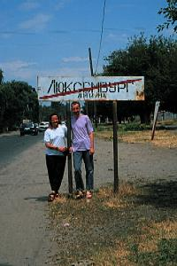
"Luksemburg" adlý bir köy! / A village
called "Luxemburg"!
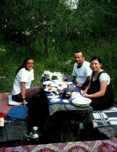
Ala Arça Kanyonu: Hasan & Menekþe ile bir
piknik /
Ala Archa Canyon: Picnic with Hasan & Menekþe
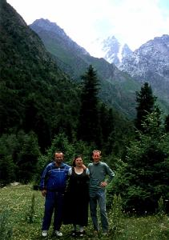
Ala Arça Kanyonu / Ala Archa Canyon
Isýk
Göl & Civarý / Issyk Kul & Surroundings
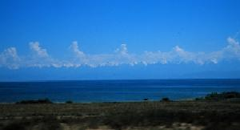
Isýk Göl, Dünya'nýn ikinci büyük yüksek gölü
(Gölün karþý tarafýndaki 4000m yüksekliðindeki
karlý daðlara dikkat edin!)
Issyk Kul, the second-largest altitude lake in the world
(observe the snowcapped 4000m-high mountains in the background!)
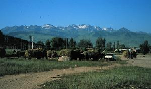
Karakol: Terskey Alatoo daglari
/ Karakol: Terskey Alatoo mountains
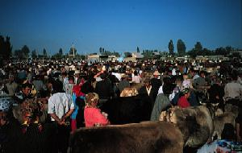
Karakol: hayvan pazarý / Karakol: animal
market
Terskey
Alatoo'da bir týrmanýþ / Trekking in the Terskey Alatoo Mountains
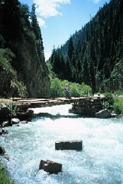
Yedi Öküz vadisi / Jeti Oguz river
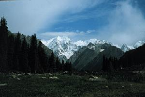
Yedi Öküz duvarý (5,181m) / Jeti Oguz
wall (5,181m)
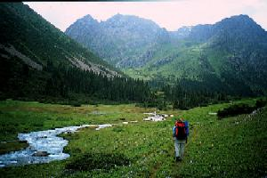
Yayla / Pasture
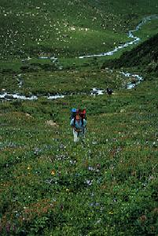
Teleti Geçidi'ne týrmanýþ / Ascending
the Teleti Pass
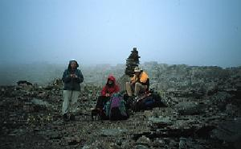
Yaðmur ve sis geliyor... / Rain and fog
creep in...
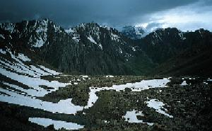
Teleti Geçidi (3,800m): cýkýþ rotasý /
Teleti Pass (3,800m): view backwards
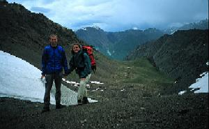
Teleti Geçidi (3,800m): iniþ rotasý /
Teleti Pass (3,800m): view forwards
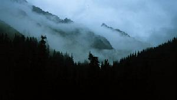
Yaðmur bulutlarý / Rain clouds
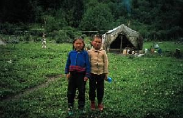
Yayla kýzlarý / Girls on a pasture
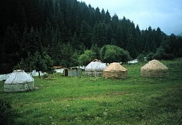
Geleneksel yurtlar / Traditional tents
("yurt")
{kind=link}
{kind=link}
{kind=link}
{kind=link}
{kind=link}
{kind=link}
{kind=link}
{kind=link}
{kind=link}
{kind=link}
{kind=link}
{kind=link}
{kind=link}
{kind=link}
{kind=link}
{kind=link}
{kind=link}